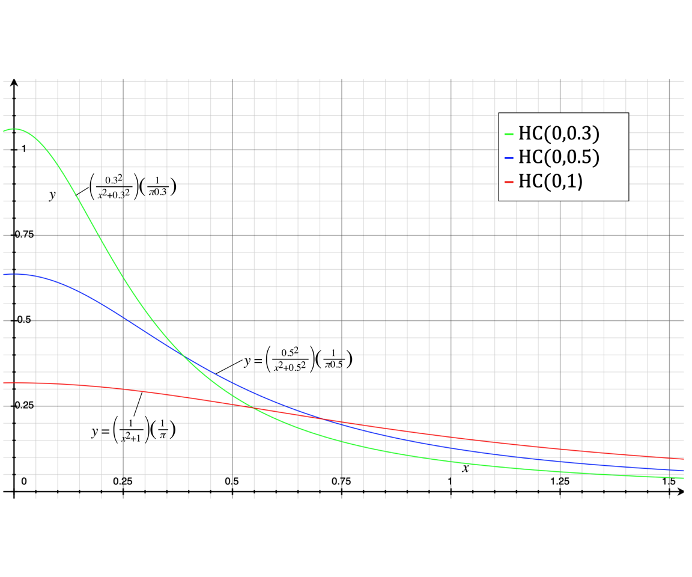
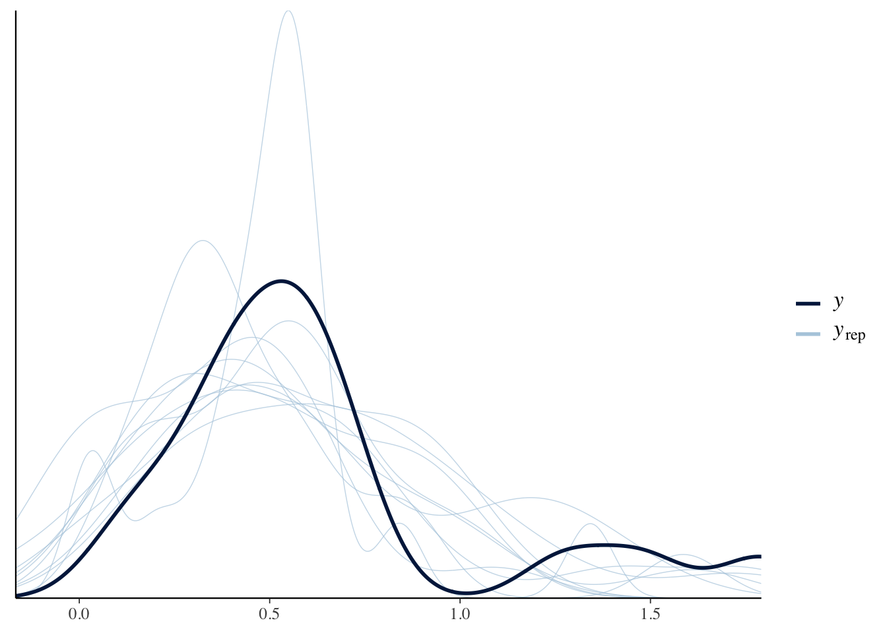
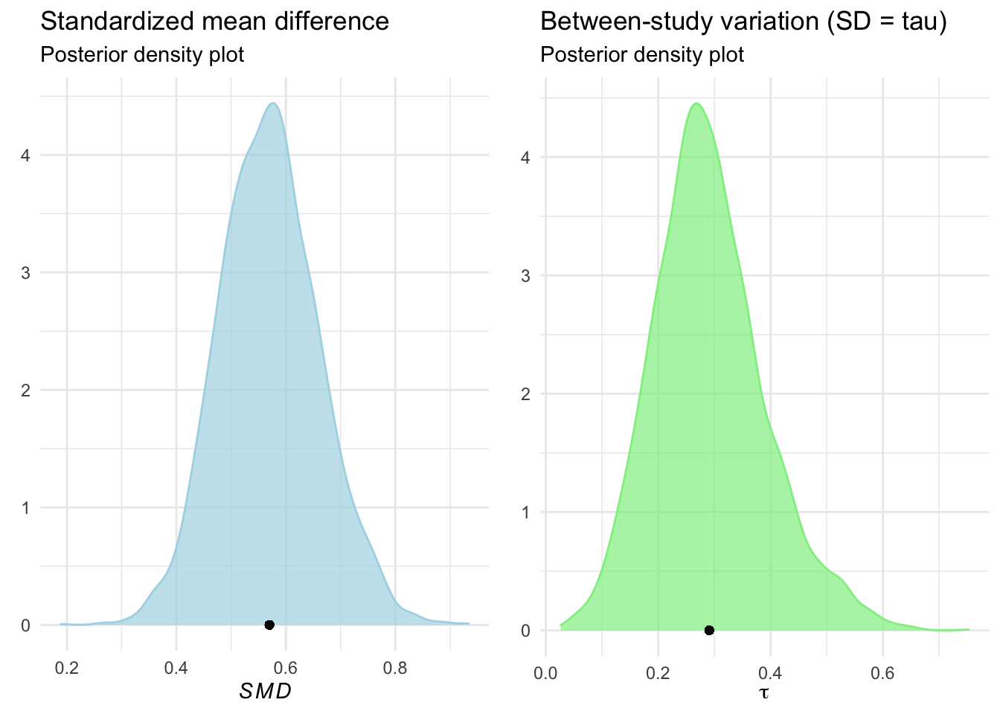
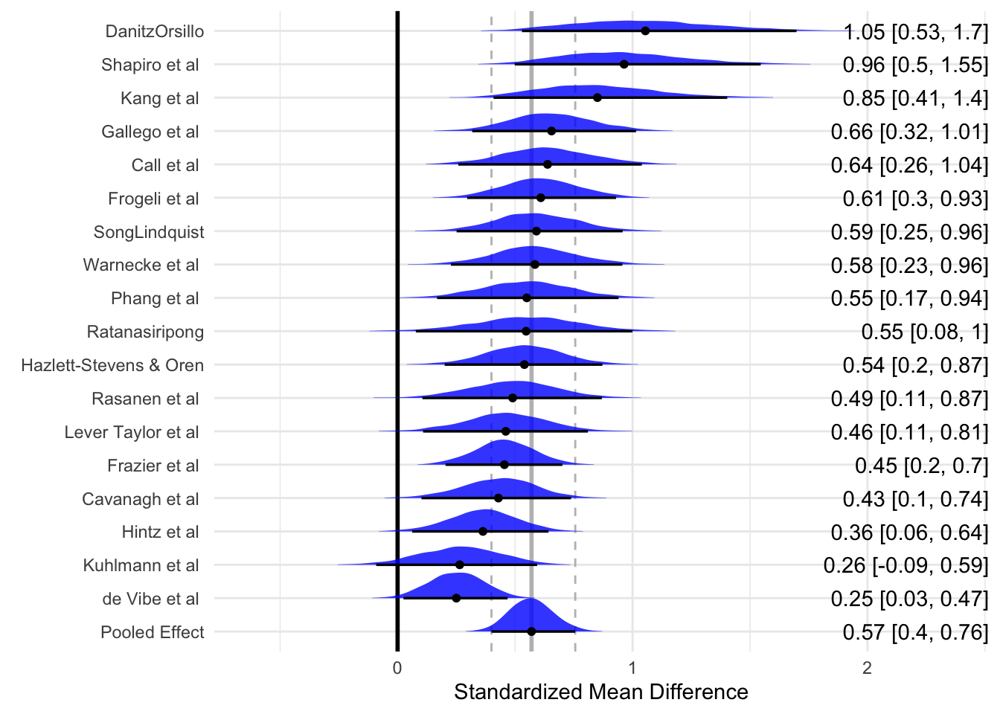
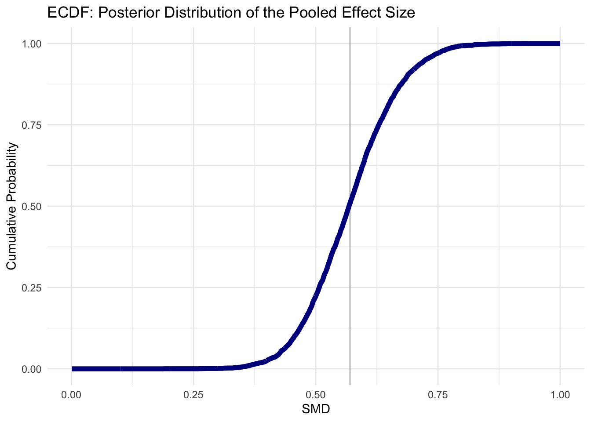

18 Meta-analysis and combining studies: Making inferences from previous work
18.1 Introduction
My notes go over on
- Christensen et al’s open-social-science guide for an overview of meta-analysis and what it foes
- Harrer’s ’Doing Meta-Analysis in R’ to go through the process and highlight key implementation issues and statistical choices
My opinions on why meta-analysis and data pooling is so important (unfold):
- Stronger inference and better organized science, clearer direction of progress
It is lame how often I see ‘new experiments’ and ‘new studies’ that tread most of the ground as old studies, spend lots of money, get a publication and … ignore or pay lip service to the previous findings. There is tons of data out there that can inform new questions and bring better through re-analysis and combination with other data. Otherwise we are not actually building progress. This is why I became involved with a project I called ‘ExpArchive,’ later working with projects such as GESIS’ X-Econ to try to encourage and facilitate data sharing in experimental economics, as well as the innovationsinfundraising.org project, which is now collaborating with the Lily Institute’s “revolutionizing philanthropy research” (RPR) project.
- ‘Stimulus sampling’ and robust evidence
18.2 An overview of meta-analysis, from Christensen et al 2019, ch 5, ’Using all evidence, registration and meta-analysis
how the research community can systematically collect, organize, and analyze a body of research work
- Limitations to the ‘narrative literature review’: subjectivity, too much info to narrate
18.2.1 The origins [and importance] of study [pre-]registration
… Make details of planned and ongoing studies available to the community …. including those not (yet) published
Required by FDA in 1997, many players in medical community followed soon after
Turner ea (08) and others documented massive publication bias and misrepresentation
… but registration far from fully enforced (Mathieu ea ’09) found 46% clealy registered, and discrepancies between registered and published outcomes !
18.2.3 Meta-analysis
Key references: Borenstein ea ’09, Cooper, Hedges, and V ’09
18.2.3.1 Selecting studies
"some scholarly discretion regarding which measures are ‘close enough’ to be included… contemperanous meta-analyses on the same topic finding opposit e conclusions
‘asses the robustness… to different inclusion conditions’… see Doucouliagos ea ’17 on inclusion options
My opinion: this is the key barrier to meta-analysis in social science! How do we weight studies using different methodologies and in different contexts? The Bayesian Random Effects approach seems to offer some help here (this not to be confused with the random effects panel-data models discussed in standard Econometrics texts).
18.2.3.2 Assembling estimates
- Which statistic to collect?
Studies \(j \in J, j= 1..N_j\)
Relevant estimate of stat from each study is \(\hat{ \beta_j}\) with SE \(\hat{\sigma_j}\)
- Papers report several estimates (e.g., in robustness checks): which to choose, esp if author’s preferred approach differs from other scholars.
Ex from Hsiang, B, Miguel, ’13: links between extreme climate and violence
how to classify outcomes… interpersonal and intergroup… normalised as pct changes wrt the meanoutcome in that dataset
how to standardice climate varn measures… chose SD from local area mean (DR: this choice implicitly reflects a behavioural assumption)
\(\rightarrow\) ‘pct change in a conflict outcome as a fncn of a 1 SD schock to local climate’
18.2.4 Combining estimates
‘Fixed-effect meta-analysis approach’: assumes a single true effect’
DR: I’m not sure I agree on this assesment of why this is unlikely to be true in practice… ‘differences in measures’ (etc) seem to be a different issue
Equal weight approach: (Simply the average across studies… ugh)
Precision-weighted approach:
\[\hat{\beta}_{PW}= \sum_{j}p_j\hat{\beta}_j/ \sum_{j}p_j\]
where \(p_j\) is the estimated precision for study \(j\): \(\frac{1}{\hat{\sigma_i}^2}\)
Thus the weight \(\omega_j\) placed on study \(j\) is proportional to it’s precision.
‘implies weight in proportion to sample size?’ I think that’s loosely worded, it must be nonlinear.
\(\rightarrow\) This minimises the variance in the resulting meta-analytical estimate:
\[var(\hat{\beta}_{PW}) =\sum_j \omega_j\hat{\sigma_j}^2 = \frac{1}{\sum_j(p_j)}\]
‘inclusion of additional estimates always reduces the SE of \(\hat{\beta_{PW}}\) [in expectation].’ … so more estimtes can’t hurt as long as you know their precision.
(they give a numerical example here with 3 estimates)
18.2.5 Heterogeneous estimates…
18.2.5.1 WLS estimate
(Stanley and Doucouliagos ’15)
Interpreted as ‘an estimate of the average of potentially heterogenous estimates’
This may feel like a more familiar to Economists but it is also seems to be far less useful than the Bayesian approach.
18.2.5.2 Random-effects (more common)
Focus here on hierarchical Bayesian approach (Gelman and Hill ’06; Gelman ea ’13)
The magnitude and precision of the common component represents the generalizable conclusions we might draw from a literature’
… continuing from above notation
cross-study differences we observe might not be driven solely by sampling variability… [even with] infinite data, they would not converge to the exact same [estimate]
True Treatment Effect (TE) \(\beta_j\) for study j drawn from a normal distribution…
\[\beta_j \sim N(\mu, \tau^2)\]
‘Hyper-parameters’ \(\mu\) determines central tendency of findings… \(\tau\) the extent of heterogeneity across contexts.
Considering \(\tau\) vs \(\mu\) is informative in itself. And a large \(\mu\) may suggest looking into sample splits for hety on obsl lines.
Uniform prior for \(\mu\) \(\rightarrow\) conditional posterior:
\[\mu|\tau,y \sim N(\hat{\mu}, V_{\mu})\] where the estimated common effect \(\hat{\mu}\) is
\[\hat{\mu}= \frac{\sum_{j}(1/(\hat{\sigma}^2_j+\hat{\tau}^2))\hat{\beta}} {\sum_{j}(1/(\hat{\sigma}^2_j+\hat{\tau}^2))}\]
(Similar to precision-weighted approach but now the between-study dispersion is incorporated into the weights)
and where the estimated variance of the generalizable component \(V_\mu\) is:
\[Var(\hat{\mu})= \frac{1}{\sum_j\big(1/(\hat{\sigma_i}^2 + \hat{tau}^2)}\]
Confusion/correction? Is this the estimated variance or the variance of the estimate?
- and how do we estimate some of the components of these, like \(\hat{\tau}\)?
Intuitively, if estimated [TE] in all studies are near one another and have relatively wide and overlapping [CI’s], then most of the difference in estimates is likely the result of sampling variation [and \(\tau\)] is likely to be close to zero.
DR: But if the TE have wide CI’s, do we have power to idfy btwn-study hety? … I guess that’s what the ‘estimated TE are all near each other’ gives us?
… Alternatively, if there is extensive variation in the estimated ATEs but each is precise… \(\tau\) is likely to be relatively large.
Coding meta-analyses in R
“A Review of Meta-Analysis Packages in R” offers a helpful guide to the various packages, such as metafor.
Doing Meta-Analysis in R: A Hands-on Guide appears extremely helpful; see, e.g., their chapter Bayesian Meta-Analysis in R using the brms package
The \(I^2\) stat is a measure of the proportion of total variation attributed to cross-study variation; if \(\hat{\sigma}_j\) is the same across all studies we have: \(I^2(.) = \hat{\tau}^2/(\hat{\tau}^2 + \hat{\sigma}^2)\)
18.3 Excerpts and notes from ‘Doing Meta-Analysis in R: A Hands-on Guide’ (Harrer et al)
Note that installation of the required packages can be tricky here. For Mac Catalina with R 4.0 I followed the instructions HERE
#devtools::install_github("MathiasHarrer/dmetar")
#...I did not 'update new packages'
#install.packages("extraDistr")
library(pacman)
p_load(tidyverse, meta, brms, dmetar, extraDistr, ggplot2, tidybayes, dplyr, ggplot2, ggridges, glue, stringr, forcats, meta, metafor, here)
load(here("meta_anal_and_open_science", "Doing-Meta-Analysis-in-R-master", "_data", "Meta_Analysis_Data.RData"))
madata <- Meta_Analysis_Data18.3.1 Pooling effect sizes
Fixed effects model
\[\hat{\theta_F} = \frac{\sum\limits_{k=1}^K\hat{\theta_k}/\hat{\sigma}^2_k}{\sum\limits_{k=1}^K1/\hat{\sigma}^2_k} \] \[\hat{\sigma^2_k}=\sum\limits_{k=1}^K \frac{1}{K}\hat{\sigma}^2_k \]
- note that this process does not ‘dig in’ to the raw data, it just needs the summary statistics, neither does the “RE model” they refer to:
Both of these models only require an effect size, and a dispersion (variance) estimate for each study, of which the inverse is taken. This is why the methods are often called generic inverse-variance methods.
Nor do the Bayesian models, apparently (they use the same datasets in his examples I think)
The sample data:
str(madata)## tibble[,17] [18 × 17] (S3: tbl_df/tbl/data.frame)
## $ Author : chr [1:18] "Call et al." "Cavanagh et al." "DanitzOrsillo" "de Vibe et al." ...
## $ TE : num [1:18] 0.709 0.355 1.791 0.182 0.422 ...
## $ seTE : num [1:18] 0.261 0.196 0.346 0.118 0.145 ...
## $ RoB : chr [1:18] "low" "low" "high" "low" ...
## $ Control : chr [1:18] "WLC" "WLC" "WLC" "no intervention" ...
## $ intervention duration: chr [1:18] "short" "short" "short" "short" ...
## $ intervention type : chr [1:18] "mindfulness" "mindfulness" "ACT" "mindfulness" ...
## $ population : chr [1:18] "undergraduate students" "students" "undergraduate students" "undergraduate students" ...
## $ type of students : chr [1:18] "psychology" "general" "general" "general" ...
## $ prevention type : chr [1:18] "selective" "universal" "universal" "universal" ...
## $ gender : chr [1:18] "female" "mixed" "mixed" "mixed" ...
## $ mode of delivery : chr [1:18] "group" "online" "group" "group" ...
## $ ROB streng : chr [1:18] "high" "low" "high" "low" ...
## $ ROB superstreng : chr [1:18] "high" "high" "high" "low" ...
## $ compensation : chr [1:18] "none" "none" "voucher/money" "voucher/money" ...
## $ instruments : chr [1:18] "DASS" "PSS" "DASS" "other" ...
## $ guidance : chr [1:18] "f2f" "self-guided" "f2f" "f2f" ...As our effect sizes are already calculated, we can use the
meta::metagenfunction.
A particularly relevant parameter to specify:
sm=: The summary measure we want to calculate. We can either calculate the mean difference (MD) or Hedges’ g/Cohen’s d (SMD)".^*^
Recall, Hedges’ and Cohen’s measures are the mean difference between the groups divided by the pooled standard deviation. Below these seem to yield the same result, perhaps because these results are already normalised.
Our first fixed-effects model meta-analysis:
(
m <- madata %>%
metagen(
TE, # the treatment effect variable
seTE, # the SE of treatment effect variable
data=.,
studlab=paste(Author), #labels for each study
comb.fixed = TRUE, #yes fixed effects estimation
comb.random = FALSE, #no RE estimation (we could do both)
prediction=TRUE, #"print a prediction interval for the effect of future studies based on present evidence"
sm="SMD")
)## SMD 95%-CI %W(fixed)
## Call et al. 0.7091 [ 0.1979; 1.2203] 3.6
## Cavanagh et al. 0.3549 [-0.0300; 0.7397] 6.3
## DanitzOrsillo 1.7912 [ 1.1139; 2.4685] 2.0
## de Vibe et al. 0.1825 [-0.0484; 0.4133] 17.5
## Frazier et al. 0.4219 [ 0.1380; 0.7057] 11.6
## Frogeli et al. 0.6300 [ 0.2458; 1.0142] 6.3
## Gallego et al. 0.7249 [ 0.2846; 1.1652] 4.8
## Hazlett-Stevens & Oren 0.5287 [ 0.1162; 0.9412] 5.5
## Hintz et al. 0.2840 [-0.0453; 0.6133] 8.6
## Kang et al. 1.2751 [ 0.6142; 1.9360] 2.1
## Kuhlmann et al. 0.1036 [-0.2781; 0.4853] 6.4
## Lever Taylor et al. 0.3884 [-0.0639; 0.8407] 4.6
## Phang et al. 0.5407 [ 0.0619; 1.0196] 4.1
## Rasanen et al. 0.4262 [-0.0794; 0.9317] 3.6
## Ratanasiripong 0.5154 [-0.1731; 1.2039] 2.0
## Shapiro et al. 1.4797 [ 0.8618; 2.0977] 2.4
## SongLindquist 0.6126 [ 0.1683; 1.0569] 4.7
## Warnecke et al. 0.6000 [ 0.1120; 1.0880] 3.9
##
## Number of studies combined: k = 18
##
## SMD 95%-CI z p-value
## Fixed effect model 0.4805 [ 0.3840; 0.5771] 9.75 < 0.0001
## Prediction interval [-0.0344; 1.1826]
##
## Quantifying heterogeneity:
## tau^2 = 0.0752 [0.0357; 0.3046]; tau = 0.2743 [0.1891; 0.5519]
## I^2 = 62.6% [37.9%; 77.5%]; H = 1.64 [1.27; 2.11]
##
## Test of heterogeneity:
## Q d.f. p-value
## 45.50 17 0.0002
##
## Details on meta-analytical method:
## - Inverse variance method
## - DerSimonian-Laird estimator for tau^2
## - Jackson method for confidence interval of tau^2 and tauResults include:
- The individual effect sizes for each study (SMD), and their weight (%W(fixed))
- The overall effect (in our case, \(g\) = 0.48) and its confidence interval and \(p\)-value
- Measures of between-study heterogeneity, such as \(tau^2\) or \(I^2\) and a \(Q\)-test of heterogeneity
\(tau^2\) - “The square root of this number (i.e. \(\tau\)) is the estimated standard deviation of underlying effects across studies” - Cochrane handbook
\(I^2\) is a transformation of the ch-sq statistic… ‘This describes the percentage of the variability in effect estimates that is due to heterogeneity rather than sampling error (chance).’
You can output these results as a text file using the ‘sink’ command, but I don’t see the point.
You can do a similar calculation with raw data (rather than aggregated data) using the meta::metacont command, as he shows. I think it just does all the aggregation within the function but it’s otherwise the same.
Harrer’s notes on whether we should use RE or FE (unfold)
“The random-effects-model pays more attention to small studies when pooling the overall effect in a meta-analysis (Schwarzer, Carpenter, and Rücker 2015). Yet, small studies in particular are often fraught with bias (see Chapter 8.1). This is why some have argued that the fixed-effects-model should be nearly always preferred (Poole and Greenland 1999; Furukawa, McGuire, and Barbui 2003).”
DR: I’m not sure the “pays more attention to small studies” point is correct, although it is certainly empirically the case below.Random effects model
There are a variety of estimators for the variance of the true effect size \(\tau^2\). You must choose one. He recommends Veroniki et al’s discussion of this.
DerSimonian-Laird (1986) estimator is the most common
"Maximum-Likelihood, Sidik-Jonkman, and Empirical Bayes estimators have better properties in estimating the between-study variance (Sidik and Jonkman 2007; Viechtbauer 2005).
DerSimonian-Laird is also seen to be prone to producing false positives (for the mean effect I think?)
- HKSJ is more conservative, but has ‘residual concerns’
Running an RE meta-analysis:
(
m.hksj <- metagen(TE,
seTE,
data = madata,
studlab = paste(Author),
comb.fixed = FALSE,
comb.random = TRUE,
method.tau = "SJ", #Sidik-Jonkman method
hakn = TRUE, #"use the Knapp-Hartung method" or 'adjustment'... seems to effect only the CI for the pooled effect
prediction = TRUE,
sm = "SMD")
)## SMD 95%-CI %W(random)
## Call et al. 0.7091 [ 0.1979; 1.2203] 5.2
## Cavanagh et al. 0.3549 [-0.0300; 0.7397] 6.1
## DanitzOrsillo 1.7912 [ 1.1139; 2.4685] 4.2
## de Vibe et al. 0.1825 [-0.0484; 0.4133] 7.1
## Frazier et al. 0.4219 [ 0.1380; 0.7057] 6.8
## Frogeli et al. 0.6300 [ 0.2458; 1.0142] 6.1
## Gallego et al. 0.7249 [ 0.2846; 1.1652] 5.7
## Hazlett-Stevens & Oren 0.5287 [ 0.1162; 0.9412] 5.9
## Hintz et al. 0.2840 [-0.0453; 0.6133] 6.5
## Kang et al. 1.2751 [ 0.6142; 1.9360] 4.3
## Kuhlmann et al. 0.1036 [-0.2781; 0.4853] 6.1
## Lever Taylor et al. 0.3884 [-0.0639; 0.8407] 5.6
## Phang et al. 0.5407 [ 0.0619; 1.0196] 5.4
## Rasanen et al. 0.4262 [-0.0794; 0.9317] 5.3
## Ratanasiripong 0.5154 [-0.1731; 1.2039] 4.1
## Shapiro et al. 1.4797 [ 0.8618; 2.0977] 4.5
## SongLindquist 0.6126 [ 0.1683; 1.0569] 5.7
## Warnecke et al. 0.6000 [ 0.1120; 1.0880] 5.4
##
## Number of studies combined: k = 18
##
## SMD 95%-CI t p-value
## Random effects model 0.5935 [ 0.3891; 0.7979] 6.13 < 0.0001
## Prediction interval [-0.2084; 1.3954]
##
## Quantifying heterogeneity:
## tau^2 = 0.1337 [0.0295; 0.3533]; tau = 0.3657 [0.1717; 0.5944]
## I^2 = 62.6% [37.9%; 77.5%]; H = 1.64 [1.27; 2.11]
##
## Test of heterogeneity:
## Q d.f. p-value
## 45.50 17 0.0002
##
## Details on meta-analytical method:
## - Inverse variance method
## - Sidik-Jonkman estimator for tau^2
## - Q-profile method for confidence interval of tau^2 and tau
## - Hartung-Knapp adjustment for random effects modelBinary outcomes
Outcomes like
pooled Odds Ratio: relative incidence in treatment vs control
the Relative Risk: share of total incidence in treatment, scaled by sample size
Incidence Rate Ratio: similar to OR but scaled by duration, I think
Packages:
- Again we use
metagenfor pooled data. - with raw outcome data we’ve
meta::metabin()ormeta::metainc()
[standard inverse variance weighting] is suboptimal for binary outcome data … [especially when] dealing with sparse data, meaning that the number of events or the total sample size of a study is small,
18.3.2 Bayesian Meta-analysis
“The model we apply in Bayesian Meta-Analysis is a so-called Bayesian Hierarchical Model… every meta-analytical model inherently possesses a multilevel, and thus ‘hierarchical,’ structure.”
A Bayesian hierarchical model has three layers:
- A data layer (the likelihood)
- A process layer (the parameters describing the underlying process)
- A prior layer (priors on hyperparameters)
The setup
Underlying RE model (as before)
Study-specific estimates \(\hat{\theta}_k\) are distributed :
\[ \hat\theta_k \sim \mathcal{N}(\theta_k,\sigma_k^2) \]
True study-specific effects \(\theta_k\) are distributed:
\[ \theta_k \sim \mathcal{N}(\mu,\tau^2) \]
… simplified to the ‘marginal’ form, this is
\[ (\hat\theta_k | \mu, \tau, \sigma_k) \sim \mathcal{N}(\mu,\sigma_k^2 + \tau^2)\]
And now we specify priors for these parameters, ‘making it Bayesian’
\[(\mu, \tau^2) \sim p(.)\] \[ \tau^2 > 0 \]
Estimation will…
[involve] Markov Chain Monte Carlo based sampling procedures, such as the Gibbs Sampler. In the brms package we will be using in this chapter, the No-U-Turn Sampler, or NUTS (Hoffman and Gelman 2014), is used.
MCMC is used to sample from the posterior distribution. Without MCMC, to sample from the posterior the normalising constant would have to be found. But with most prior/likelihood combinations, the integral to find it is intractable.
Why use Bayesian?
to “directly model the uncertainty when estimating [the between-study variance] \(\tau^2\)”
“have been found to be superior in estimating the between-study heterogeneity and pooled effect, particularly when the number of included studies is small”
“produce full posterior distributions for both \(\mu\) and \(\tau\)” … so we can make legitimate statements about the probabilities of true parameters
“allow us to integrate prior knowledge and assumptions when calculating meta-analyses” (including methodological uncertainty perhaps)
Setting weakly informative’ priors for the mean and cross-study variance of the TE sizes
It has been argued that a good approach is to use weakly informative priors (Williams, Rast, and Bürkner 2018) [rather than ‘non-informative priors!’].
With a non-informative prior, we are essentially saying that we do not have any prior information on the effect size, whereas often we do have some information, and would like to include it in our analyis. Make sure to research priors before using them, as some be be very informative, with an example being the uniform distibution saying that extreme values are as likely as moderate values.
For \(\mu\):
include distributions which represent that we do indeed have some confidence that some values are more credible than others, while still not making any overly specific statements about the exact true value of the parameter. … In most applied cases, it seems reasonable to assume that the true effect size we want to estimate must lie somewhere between, for example, Cohen’s \(d=-2.0\) and \(d=2.0\), but will unlikely be hovering around \(d=50\). A good starting point for our \(\mu\) prior may therefore be a normal distribution with mean \(0\) and variance \(1\). This means that we grant a 95% prior probability that the true pooled effect size \(\mu\) lies between \(d=-2.0\) and \(d=2.0\).
\[ \mu \sim \mathcal{N}(0,1)\]
Discussion (unfold)
SD: There has to be very good reason for setting the prior mean to be different from zero, as that would mean holding a prior belief of a (potentially) strong, positive or negative effect. Normally it is better to use a prior with a neutral effect. With regards to the variance of \(\mu\), consider the order of magnitude of the response, and how much each effect will have. A variance of one is large enough to explore the parameter space, without being too large to allow for extreme values.
… [A prior distinct from 0] only if we genuinely believe there to be a positive effect, otherwise we are not being “consistent” (a Bayesian term which links to our probability for an event to being our best guess estimate). Because if we are unsure if there is a positive or negative effect, then we would be ‘incoherent’ by having a positive prior effect - it would be better for our best guess estimate to have a neutral effect.
A further discussion on ‘coherence’ in the Bayesian framework versus ‘bias’ in the frequentist world (unfold).
SD: I think a big part of the discussion here comes from the subjective-objective debate in probability theory, and the way that statistics is studied. Classical statistics postulates that a variable theta is a true, objective, physical value, and that data y is randomly drawn from a distribution with those parameters. Expectation is defined from probability.
Bayesians on the other hand start with the data; y is not random, it is known to us. The parameters theta are random, in that they are unknown to us (and subjectively unknown to each of us). Probability is defined from expectation, and our probability for an event is our subjective best guess estimate for that event. We are not being coherent if our probability is not our best guess estimate, that is, if we can make a better estimate for sure. If we’re not not coherent, we’re not being consistent with our beliefs.
So because of this, the concept of bias doesn’t really exist for subjectivists; there is no long run frequentist true parameter that our best guess is being distant from. Coherence is absolutely key to the concept, as it is about my belief and my best guess. That’s where the subjectivity comes into the analysis, because you may believe one prior (for instance one with a mean of 1), whereas I may believe another prior (with a mean of 0). There isn’t any correct answer, and as long as we are being coherent, because we’re sampling from our posteriors for this parameter given our own beliefs and our own subjective uncertainty. Often on Bayesian projects there is a prior elicitation, where people come together and discuss what their subjective priors are and how they will proceed.
I think there is some merit in this line of thought though, because clearly if you have a prior with a mean of, say, 1,000,000 then you’re really influencing your effect. But then arguably if you do so, you’re not being coherent. It’s quite a deep, long, philosophical discussion for a meta analysis, but it is crucial to the frequentist vs Bayesian debate.
More here: https://en.wikipedia.org/wiki/Bias_of_an_estimator#Bayesian_view
For \(\tau^2\)
must be non-negative, but might be very close to zero.
Recommended distribution for this case (for variances in general): Half-Cauchy prior (a censored Cauchy)
\(\mathcal{HC}(x_0,s)\)
- with location parameter \(x_0\) (peak on x-axis)
- and \(s\), scaling parameter ‘how heavy-tailed’
Half-Cauchy distribution for varying \(s\), with \(x_0=0\):
## Error: package or namespace load failed for 'png' in FUN(X[[i]], ...):
## no such symbol write_png in package /Library/Frameworks/R.framework/Versions/4.0/Resources/library/png/libs/png.so## Error in readPNG(here("images", "half_cauchy.png")): could not find function "readPNG"
HC is ’heavy-tailed;… gives some probability to very high values but low values are still more likely.
One might consider \(s=0.3\)
Note that the Half-Cauchy distribution has an undefined mean, variance, skewness, and kurtosis. It does have a mode, at \(x_0\).
One might consider \(s=0.3\)
DR: \(s\) corresponds to the std deviation here? … so an SD of the effect size about 1/3 of it’s mean size? SD: Since the Cauchy distribution has infinite mean (hence undefined first moment) and variance, it doesn’t make sense to discuss \(s\) in this way. \(s\) is a way of capturing the dispersion of the distribution.
Checking the share of this distribution below 0.3…
phcauchy(0.3, sigma = 0.3) #cumulative share of distribution below 0.3 ... is 1/2 ... with sigma=0.3## [1] 0.5
… But they go for the ‘more conservative’ \(s=0.5\).
In general, it is advised to always conduct sensitivity analyses with different prior specifications to check if they affect the results substantially.
With enough data, the effect of the prior should shrink. Some priors never allow the data to overload them, so we should be careful using them.
DR: Todo - insert a formal definition
“Smaller and smaller” could be measured in terms of some metrics over the shift in the distribution, I presume. Perhaps there are several ways of measuring this (average shifts, weighted average, maximum shift for any segment, etc).
Complete model:
\[ \hat\theta_k \sim \mathcal{N}(\theta_k,\sigma_k^2) \] \[ \theta_k \sim \mathcal{N}(\mu,\tau^2) \] \[ \mu \sim \mathcal{N}(0,1)\] \[ \tau \sim \mathcal{HC}(0,0.5)\]
Bayesian Meta-Analysis in R using the brms package
You specify the priors as a vector of elements, each of which invokes the ‘prior’ function, which makes some sort of data frame. The priors function takes a distribution function with parameters, and a ‘class.’
priors <- c(prior(normal(0,1), class = Intercept), prior(cauchy(0,0.5), class = sd))A quick look at the data we’re using here:
str(madata[,1:3])## tibble[,3] [18 × 3] (S3: tbl_df/tbl/data.frame)
## $ Author: chr [1:18] "Call et al." "Cavanagh et al." "DanitzOrsillo" "de Vibe et al." ...
## $ TE : num [1:18] 0.709 0.355 1.791 0.182 0.422 ...
## $ seTE : num [1:18] 0.261 0.196 0.346 0.118 0.145 ...TE: calculated effect size of each study, expressed as the Standardized Mean Difference (SMD)
seTE: the standard error corresponding to each effect size
Author: a unique identifier for each study/effect size.
To actually run the model, he uses the following code:
This requires careful installation of packages. See here for Mac OS Catalina, R 4.9 instructions.
DR: I find it surprising how long this procedure takes to run this simulation, given that the actual data used (estimates and SE’s) is rather small. It seems to be that the C++ model takes long to compile; we sort this out below.
2000 iterations seems to be a ‘norm.’ [source?]
The issue here seems to be that it takes a long time to compile the C++ model each time; it might be something we can write to avoid this step.
SD: It will take some time to compile the model, and this is inevitable (it takes a long time with every model, this one works pretty quickly at a few minutes), but once it has compiled, it should not take a long time to sample. Below is some code to change the number of samples and show the speed once the model has compiled.
(
m.brm <- brm(TE|se(seTE) ~ 1 + (1|Author),
data = madata,
prior = priors,
iter = 2000)
)
Coding tip: use ‘update’
The brms package has a way of running the model again once it has compiled, without compiling it again. The following code increases the number of iterations from 2000 to 10000. Notice the difference in time it takes to run the code blocks.
model2 <- update(m.brm, iter=10000)##
## SAMPLING FOR MODEL 'dc600f25ec166987c6302293dcc00ca8' NOW (CHAIN 1).
## Chain 1:
## Chain 1: Gradient evaluation took 2.2e-05 seconds
## Chain 1: 1000 transitions using 10 leapfrog steps per transition would take 0.22 seconds.
## Chain 1: Adjust your expectations accordingly!
## Chain 1:
## Chain 1:
## Chain 1: Iteration: 1 / 10000 [ 0%] (Warmup)
## Chain 1: Iteration: 1000 / 10000 [ 10%] (Warmup)
## Chain 1: Iteration: 2000 / 10000 [ 20%] (Warmup)
## Chain 1: Iteration: 3000 / 10000 [ 30%] (Warmup)
## Chain 1: Iteration: 4000 / 10000 [ 40%] (Warmup)
## Chain 1: Iteration: 5000 / 10000 [ 50%] (Warmup)
## Chain 1: Iteration: 5001 / 10000 [ 50%] (Sampling)
## Chain 1: Iteration: 6000 / 10000 [ 60%] (Sampling)
## Chain 1: Iteration: 7000 / 10000 [ 70%] (Sampling)
## Chain 1: Iteration: 8000 / 10000 [ 80%] (Sampling)
## Chain 1: Iteration: 9000 / 10000 [ 90%] (Sampling)
## Chain 1: Iteration: 10000 / 10000 [100%] (Sampling)
## Chain 1:
## Chain 1: Elapsed Time: 0.291879 seconds (Warm-up)
## Chain 1: 0.3457 seconds (Sampling)
## Chain 1: 0.637579 seconds (Total)
## Chain 1:
##
## SAMPLING FOR MODEL 'dc600f25ec166987c6302293dcc00ca8' NOW (CHAIN 2).
## Chain 2:
## Chain 2: Gradient evaluation took 2.4e-05 seconds
## Chain 2: 1000 transitions using 10 leapfrog steps per transition would take 0.24 seconds.
## Chain 2: Adjust your expectations accordingly!
## Chain 2:
## Chain 2:
## Chain 2: Iteration: 1 / 10000 [ 0%] (Warmup)
## Chain 2: Iteration: 1000 / 10000 [ 10%] (Warmup)
## Chain 2: Iteration: 2000 / 10000 [ 20%] (Warmup)
## Chain 2: Iteration: 3000 / 10000 [ 30%] (Warmup)
## Chain 2: Iteration: 4000 / 10000 [ 40%] (Warmup)
## Chain 2: Iteration: 5000 / 10000 [ 50%] (Warmup)
## Chain 2: Iteration: 5001 / 10000 [ 50%] (Sampling)
## Chain 2: Iteration: 6000 / 10000 [ 60%] (Sampling)
## Chain 2: Iteration: 7000 / 10000 [ 70%] (Sampling)
## Chain 2: Iteration: 8000 / 10000 [ 80%] (Sampling)
## Chain 2: Iteration: 9000 / 10000 [ 90%] (Sampling)
## Chain 2: Iteration: 10000 / 10000 [100%] (Sampling)
## Chain 2:
## Chain 2: Elapsed Time: 0.309237 seconds (Warm-up)
## Chain 2: 0.34334 seconds (Sampling)
## Chain 2: 0.652577 seconds (Total)
## Chain 2:
##
## SAMPLING FOR MODEL 'dc600f25ec166987c6302293dcc00ca8' NOW (CHAIN 3).
## Chain 3:
## Chain 3: Gradient evaluation took 1.4e-05 seconds
## Chain 3: 1000 transitions using 10 leapfrog steps per transition would take 0.14 seconds.
## Chain 3: Adjust your expectations accordingly!
## Chain 3:
## Chain 3:
## Chain 3: Iteration: 1 / 10000 [ 0%] (Warmup)
## Chain 3: Iteration: 1000 / 10000 [ 10%] (Warmup)
## Chain 3: Iteration: 2000 / 10000 [ 20%] (Warmup)
## Chain 3: Iteration: 3000 / 10000 [ 30%] (Warmup)
## Chain 3: Iteration: 4000 / 10000 [ 40%] (Warmup)
## Chain 3: Iteration: 5000 / 10000 [ 50%] (Warmup)
## Chain 3: Iteration: 5001 / 10000 [ 50%] (Sampling)
## Chain 3: Iteration: 6000 / 10000 [ 60%] (Sampling)
## Chain 3: Iteration: 7000 / 10000 [ 70%] (Sampling)
## Chain 3: Iteration: 8000 / 10000 [ 80%] (Sampling)
## Chain 3: Iteration: 9000 / 10000 [ 90%] (Sampling)
## Chain 3: Iteration: 10000 / 10000 [100%] (Sampling)
## Chain 3:
## Chain 3: Elapsed Time: 0.294399 seconds (Warm-up)
## Chain 3: 0.347646 seconds (Sampling)
## Chain 3: 0.642045 seconds (Total)
## Chain 3:
##
## SAMPLING FOR MODEL 'dc600f25ec166987c6302293dcc00ca8' NOW (CHAIN 4).
## Chain 4:
## Chain 4: Gradient evaluation took 1.4e-05 seconds
## Chain 4: 1000 transitions using 10 leapfrog steps per transition would take 0.14 seconds.
## Chain 4: Adjust your expectations accordingly!
## Chain 4:
## Chain 4:
## Chain 4: Iteration: 1 / 10000 [ 0%] (Warmup)
## Chain 4: Iteration: 1000 / 10000 [ 10%] (Warmup)
## Chain 4: Iteration: 2000 / 10000 [ 20%] (Warmup)
## Chain 4: Iteration: 3000 / 10000 [ 30%] (Warmup)
## Chain 4: Iteration: 4000 / 10000 [ 40%] (Warmup)
## Chain 4: Iteration: 5000 / 10000 [ 50%] (Warmup)
## Chain 4: Iteration: 5001 / 10000 [ 50%] (Sampling)
## Chain 4: Iteration: 6000 / 10000 [ 60%] (Sampling)
## Chain 4: Iteration: 7000 / 10000 [ 70%] (Sampling)
## Chain 4: Iteration: 8000 / 10000 [ 80%] (Sampling)
## Chain 4: Iteration: 9000 / 10000 [ 90%] (Sampling)
## Chain 4: Iteration: 10000 / 10000 [100%] (Sampling)
## Chain 4:
## Chain 4: Elapsed Time: 0.319293 seconds (Warm-up)
## Chain 4: 0.380748 seconds (Sampling)
## Chain 4: 0.700041 seconds (Total)
## Chain 4:model2## Family: gaussian
## Links: mu = identity; sigma = identity
## Formula: TE | se(seTE) ~ 1 + (1 | Author)
## Data: madata (Number of observations: 18)
## Samples: 4 chains, each with iter = 10000; warmup = 5000; thin = 1;
## total post-warmup samples = 20000
##
## Group-Level Effects:
## ~Author (Number of levels: 18)
## Estimate Est.Error l-95% CI u-95% CI Rhat Bulk_ESS Tail_ESS
## sd(Intercept) 0.29 0.10 0.11 0.51 1.00 5186 6398
##
## Population-Level Effects:
## Estimate Est.Error l-95% CI u-95% CI Rhat Bulk_ESS Tail_ESS
## Intercept 0.57 0.09 0.40 0.76 1.00 9282 9382
##
## Family Specific Parameters:
## Estimate Est.Error l-95% CI u-95% CI Rhat Bulk_ESS Tail_ESS
## sigma 0.00 0.00 0.00 0.00 1.00 20000 20000
##
## Samples were drawn using sampling(NUTS). For each parameter, Bulk_ESS
## and Tail_ESS are effective sample size measures, and Rhat is the potential
## scale reduction factor on split chains (at convergence, Rhat = 1).If you would want to change something with the model, such as the priors, then it would have to compile again in C++.
priors2 <- c(prior(normal(0,1), class = Intercept), prior(normal(0,1), class = sd))
model3 <- update(m.brm, prior = priors2)## Error in sink(type = "output"): invalid connectionmodel3## Family: gaussian
## Links: mu = identity; sigma = identity
## Formula: TE | se(seTE) ~ 1 + (1 | Author)
## Data: madata (Number of observations: 18)
## Samples: 4 chains, each with iter = 2000; warmup = 1000; thin = 1;
## total post-warmup samples = 4000
##
## Group-Level Effects:
## ~Author (Number of levels: 18)
## Estimate Est.Error l-95% CI u-95% CI Rhat Bulk_ESS Tail_ESS
## sd(Intercept) 0.31 0.11 0.11 0.54 1.00 741 895
##
## Population-Level Effects:
## Estimate Est.Error l-95% CI u-95% CI Rhat Bulk_ESS Tail_ESS
## Intercept 0.57 0.09 0.39 0.77 1.00 1739 1819
##
## Family Specific Parameters:
## Estimate Est.Error l-95% CI u-95% CI Rhat Bulk_ESS Tail_ESS
## sigma 0.00 0.00 0.00 0.00 1.00 4000 4000
##
## Samples were drawn using sampling(NUTS). For each parameter, Bulk_ESS
## and Tail_ESS are effective sample size measures, and Rhat is the potential
## scale reduction factor on split chains (at convergence, Rhat = 1).The number of iterations can be any ‘’high number’’. A commonly used amount is 2000 iterations and four chains. The reason the number should be high is that the MCMC sampler needs to converge in distribution to the target distribution.
SD: “High” may depend on several factors (such as what distribution we’re trying to sample from, the amount of time it takes to sample, how accurate we want it to be, etc.). But broadly we want to make sure we have more samples than fewer as we want to be confident that we have converged to the target distribution. I’d usually stick to something in the thousands to be sure.
There is a good discussion about it on the answers here: https://stats.stackexchange.com/questions/203281/number-of-markov-chain-monte-carlo-samples
The formula for the model is specified using ‘regression formula notation’ (unfold)…
As there is no ‘predictor variable’ in such analyses (unless it’s meta-regression),
xis replaced with1.But we want to give studies that more precisely estimate the effect size (perhaps because they have a larger sample) a greater weight.
- Coded using the
y|se(se_y)element
- Coded using the
For the random effects terms he adds
(1|study)to the predictor part (or here(1|author).prior: Plugs in the priors created above plug in thepriorsobject we created previously here.iter: Number of iterations of MCMC algorithm… the more complex your model, the higher this number should be. [DR: but what’s a rule of thumb here – see links in margein note?]
Assesing convergence (has MCMC algo found an optimum?)
If it hasn’t converged, don’t trust it!
- You may need to boost the number of iterations
“Posterior predictive checks”: If it’s converged, then the density of the replications should resemble the original data.
DRL Not sure I understand this; may need to revise and give a clear explanation. I guess it’s something like ‘the estimated parameter densities can then be drawn and run to simulate a dgp, which should yield data looking like the original data set’…
pp_check(m.brm)
A commonly used method of assessing convergence is to look at the traceplots. There should be no distinctive patterns, and they should not have large spikes. Good traceplots look “well mixed,” suggesting that the parameter space is being explored.*
Is ‘assessing convergence’ a subjective judgement? (Unfold a discussion.)
SD: We will never know if the sampler has converged to the target distribution, but with more and more samples and well mixed traceplots, along with R-hats close to 1, we can be very confident that it has.
I think that it is the same for other subjective methods such as GAMs, where the number of splines to include is very subjective. There are some tests used to help inform the statistician about the suitability of more/less splines, but ultimately it is down to the statistician to make the judgement about it.
DR: Rather than ‘subjective’ I would suspect that: 1. There are numerical measures for assessing this convergence (as there are in optimisation problems) 2. Perhaps there remains debate over which is the best method.
SD: I think that the R hat is one of those numerical methods, I’m not completely sure about that though. There is a paper discussing them and it comes up on Arxiv. I think effective sample size is another one of those numerical measures.
There is some discussion on which methods are best here: https://stats.stackexchange.com/questions/507/what-is-the-best-method-for-checking-convergence-in-mcmc
It seems that most people use a combination of both numerical methods and visual checking. When I studied it, we checked the Rhat, the effective sample size, and checked for patterns in the trace plots (eg obvious autocorrelation, large spikes, etc)
There are some good slides on visually assessing convergence here: https://astrostatistics.psu.edu/RLectures/diagnosticsMCMC.pdf
library(bayesplot)
mcmc_trace(m.brm)
Also check for a Potential Scale Reduction Factor (PSRF), or \(\hat{R}\) below 1.01.
SD: Rhat is a Bayesian measure used to determine convergence - I don’t think that Harrer will go into detail. It has a complicated formula, but all we should focus on is that Rhat converges to 1 as n tends to infinity. Read more here: https://mc-stan.org/rstan/reference/Rhat.html
summary(m.brm)## Family: gaussian
## Links: mu = identity; sigma = identity
## Formula: TE | se(seTE) ~ 1 + (1 | Author)
## Data: madata (Number of observations: 18)
## Samples: 4 chains, each with iter = 2000; warmup = 1000; thin = 1;
## total post-warmup samples = 4000
##
## Group-Level Effects:
## ~Author (Number of levels: 18)
## Estimate Est.Error l-95% CI u-95% CI Rhat Bulk_ESS Tail_ESS
## sd(Intercept) 0.29 0.10 0.12 0.52 1.00 1269 1956
##
## Population-Level Effects:
## Estimate Est.Error l-95% CI u-95% CI Rhat Bulk_ESS Tail_ESS
## Intercept 0.57 0.09 0.40 0.76 1.00 2043 2474
##
## Family Specific Parameters:
## Estimate Est.Error l-95% CI u-95% CI Rhat Bulk_ESS Tail_ESS
## sigma 0.00 0.00 0.00 0.00 1.00 4000 4000
##
## Samples were drawn using sampling(NUTS). For each parameter, Bulk_ESS
## and Tail_ESS are effective sample size measures, and Rhat is the potential
## scale reduction factor on split chains (at convergence, Rhat = 1).Interpreting the Results
Above we see the estimated ‘sd of the mean effect’ and the ‘mean effect,’ and ‘est. error’ and CI’s for each.
Is ‘est error’ this like a measure of the standard deviation of the estimated coefficient?
Here CI’s are ‘credible intervals.’
We can also extract the estimated deviation of each study’s “true” effect size from the pooled effect:
ranef(m.brm)## $Author
## , , Intercept
##
## Estimate Est.Error Q2.5 Q97.5
## Call et al. 0.068 0.19 -0.31276 0.456
## Cavanagh et al. -0.141 0.18 -0.51514 0.185
## DanitzOrsillo 0.485 0.29 -0.00057 1.119
## de Vibe et al. -0.320 0.14 -0.60760 -0.051
## Frazier et al. -0.116 0.15 -0.40773 0.154
## Frogeli et al. 0.039 0.17 -0.30301 0.369
## Gallego et al. 0.085 0.18 -0.26490 0.452
## Hazlett-Stevens & Oren -0.030 0.17 -0.38629 0.312
## Hintz et al. -0.207 0.17 -0.54148 0.098
## Kang et al. 0.280 0.24 -0.14273 0.809
## Kuhlmann et al. -0.306 0.19 -0.70507 0.041
## Lever Taylor et al. -0.110 0.19 -0.49177 0.247
## Phang et al. -0.020 0.20 -0.41683 0.365
## Rasanen et al. -0.080 0.20 -0.48394 0.304
## Ratanasiripong -0.023 0.23 -0.51606 0.421
## Shapiro et al. 0.394 0.25 -0.04050 0.957
## SongLindquist 0.021 0.18 -0.33733 0.376
## Warnecke et al. 0.015 0.19 -0.37598 0.390These are measures of deviations. But they don’t exactly equal the difference between the input effect size and the estimated pooled effect size. In fact this is coming from an estimate of the true effect for each study which ‘averages towards the mean’ following some criteria (this is mentioned later).
- No p-values listed because this is Bayesian.
SD: With a classical analysis, we would ask if there is enough evidence of an effect to reject the null hypothesis of no impact at a (subjective) significance level. With a Bayesian approach, the entire distribution of the parameter is calcuated, is it is better to observe the distribution of the parameter. Frequentist analyses give binary answers to continuous questions, whereas with Bayesian analyses, continuous questions have continuous answers. (Paraphrasing Daniel XXX).
Instead he states:
the Estimate of the pooled effect size is SMD = 0.57, with the 95% credibility interval (not confidence interval!) ranging from 95% CrI: 0.40 − 0.77. This indicates that there is in fact a moderate-sized overall effect of the interventions studied in this meta-analysis.
But now we can model the parameters we want to estimate probabilistically…
Taking samples from the (?) simulated posterior density of the population intercept (mean effect size) and sd of the effect…
post.samples <- posterior_samples(m.brm, c("^b", "^sd"))
names(post.samples)## [1] "b_Intercept" "sd_Author__Intercept"names(post.samples) <- c("smd", "tau")“… make a density plot of the posterior distributions”
# Plot for SMD
smd_density <- ggplot(aes(x = smd), data = post.samples) +
geom_density(fill = "lightblue", color = "lightblue", alpha = 0.7) +
geom_point(y = 0, x = mean(post.samples$smd)) +
labs(x = expression(italic(SMD)),
y = element_blank()) +
theme_minimal() +
ggtitle("Standardized mean difference", subtitle = "Posterior density plot")
# Plot for tau
tau_density <- ggplot(aes(x = tau), data = post.samples) +
geom_density(fill = "lightgreen", color = "lightgreen", alpha = 0.7) +
geom_point(y = 0, x = mean(post.samples$tau)) +
labs(x = expression(tau),
y = element_blank()) +
theme_minimal() +
ggtitle("Between-study variation (SD = tau)", subtitle = "Posterior density plot")
#Display plots together
require(gridExtra)
grid.arrange(smd_density, tau_density, ncol=2)
- posterior distributions unimodal, roughly normal distribution
- … “peaking around the values for \(\mu\) and \(\tau\) we saw in the output”
Consider: why are the peaks not exactly these values? Mean versus mode, I guess.
Maybe we want to know (e.g.) “the probability that the pooled effect is \(SMD=0.30\) or smaller, based on our model.”
Because maybe an effect of 0.30 or smaller means it’s not worth using this drug or something
Consider the Empirical Cumulative Distribution Function (ECDF) “of the posterior distribution for the pooled effect size”…
Use the
ecdffunction to implement the ECDF… then check…
smd.ecdf <- ecdf(post.samples$smd)
smd.ecdf(0.3)## [1] 0.0013We see that the probability of our pooled effect being smaller than \(SMD = 0.30\) is very, very low, so the effects of the interventions we find in this meta-analysis are very likely to be meaningful.
Plotting the ECDF below:

18.3.3 Forest plots
Forest plots are great, esp. with Bayesian, where we’ve ‘sampled posterior distributions’… but there’s no prepackaged tool yet. So we’ve to build it with help from the tidybayes package.
First we prepare the data, extracting the posterior distribution for each study individually.
Use the spread_draws function … takes, as input 1. the fitted brms model, 2. the random-effects index factor and the parameter to extract (here b_Intercept). …calculate actual effect sizes for each by adding the pooled effect size b_Intercept to the estimated deviation for each study.
study.draws <- spread_draws(m.brm, r_Author[Author,], b_Intercept) %>%
mutate(b_Intercept = r_Author + b_Intercept)
Next, generate the distribution of the pooled effect (usually out in the last row of forest plots).
pooled.effect.draws <- spread_draws(m.brm, b_Intercept) %>%
mutate(Author = "Pooled Effect")Bind this together, clean labels and reorder:
forest.data <- bind_rows(study.draws, pooled.effect.draws) %>%
ungroup() %>%
mutate(Author = str_replace_all(Author, "[.]", " ")) %>%
mutate(Author = reorder(Author, b_Intercept))Generate summarized data (the mean and credibility interval) of each study. Group the above by author, use the mean_qi function (generates 95pct intervals) to calculate these.
forest.data.summary <- group_by(forest.data, Author) %>%
mean_qi(b_Intercept)
Now generate the forest plot:
ggplot(aes(b_Intercept, relevel(Author, "Pooled Effect", after = Inf)),
data = forest.data) +
geom_vline(xintercept = fixef(m.brm)[1, 1], color = "grey", size = 1) +
geom_vline(xintercept = fixef(m.brm)[1, 3:4], color = "grey", linetype = 2) +
geom_vline(xintercept = 0, color = "black", size = 1) +
geom_density_ridges(fill = "blue", rel_min_height = 0.01, col = NA, scale = 1,
alpha = 0.8) +
geom_pointintervalh(data = forest.data.summary, size = 1) +
geom_text(data = mutate_if(forest.data.summary, is.numeric, round, 2),
aes(label = glue("{b_Intercept} [{.lower}, {.upper}]"), x = Inf), hjust = "inward") +
labs(x = "Standardized Mean Difference",
y = element_blank()) +
theme_minimal()
Remember, these are not the effect sizes from the original studies. There has been some bayesian updating of each of these, considering all the others.
18.4 Dealing with publication bias
- Exacerbated by multiple-hypothesis-testing?
But i think it also talks somewhat to the Steffano DellaVigna paper that was presented at the VAFE - that the publication bias really creeps in when we are publishing studies that have just one or two p values around 0.05.
18.4.1 Diagnosis and responses: P-curves, funnel plots, adjustments
18.5 Other notes, links, and commentary
A high quality meta-analysis should:
- Have a pre-registered protocol
- Appropriately deal with dependent effect sizes
- Explore effect size heterogeneity
- Have a clear methods description
- Report COIs
- Publish data and code https://t.co/cHj11wv5vm— Dan Quintana (dsquintana) November 18, 2019
18.6 Other resources and tools
Feldman: Experimental Studies Meta-Analysis Registered Report template: Main manuscript
18.6.1 Institutional and systematic guidelines
Cochrane Handbook for Systematic Reviews of Interventions online
18.2.2 Social science study registries